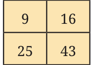
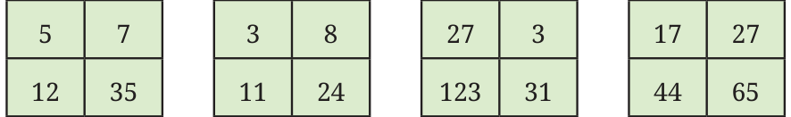
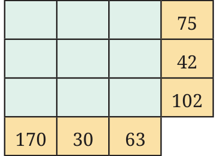
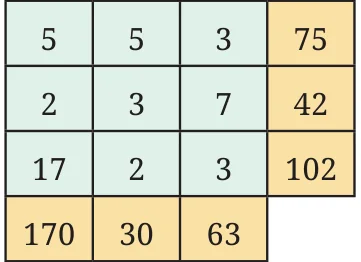
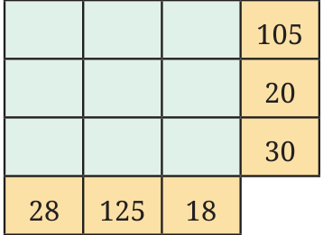
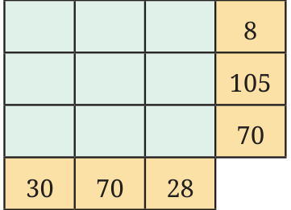
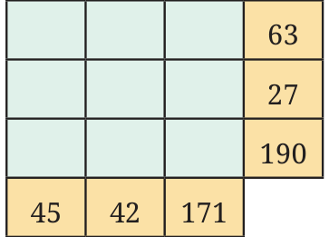
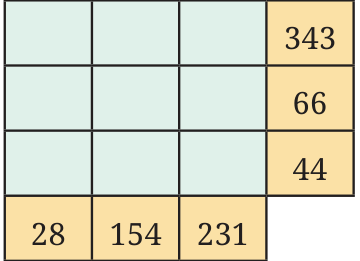

<!DOCTYPE html>
<html lang="en">
<head>
<meta charset="UTF-8">
<meta name="viewport" content="width=device-width,initial-scale=1">
<title>5.6 Fun with numbers — Prime Time</title>
<meta name="description" content="Class 6 Mathematics · Prime Time · 5.6 Fun with numbers">
<link rel="icon" href="data:image/svg+xml,<svg xmlns='http://www.w3.org/2000/svg' viewBox='0 0 100 100'><text y='.9em' font-size='90'>📘</text></svg>">
<link rel="stylesheet" href="../../../assets/book.css">
<link rel="stylesheet" href="https://cdn.jsdelivr.net/npm/katex@0.16.11/dist/katex.min.css" crossorigin="anonymous">
</head>
<body>
<header class="topbar">
<div class="topbar-in">
  <div class="crumb">
    <span class="c1"><a href="../../../index.html">Library</a> · <a href="../../index.html">Class 6 Mathematics</a></span>
    <span class="c2">Prime Time · 5.6 Fun with numbers</span>
  </div>
  <a class="tb-btn" data-nav="prev" href="../../05-prime-time/11-figure-it-out/index.html" title="Figure it Out">←</a>
  <details class="drawer"><summary class="tb-btn" title="Sections in this chapter">☰</summary>
<div class="drawer-panel"><div class="dh">Prime Time</div><a href="../01-common-multiples-and-common-factors-5.1/index.html">5.1 Common Multiples and Common Factors</a><a href="../02-figure-it-out/index.html">Figure it Out</a><a href="../03-figure-it-out/index.html">Figure it Out</a><a href="../04-prime-numbers-5.2/index.html">5.2 Prime Numbers</a><a href="../05-figure-it-out/index.html">Figure it Out</a><a href="../06-co-prime-numbers-for-safekeeping-treasures-5.3/index.html">5.3 Co-prime numbers for safekeeping treasures</a><a href="../07-prime-factorisation-5.4/index.html">5.4 Prime Factorisation</a><a href="../08-figure-it-out/index.html">Figure it Out</a><a href="../09-figure-it-out/index.html">Figure it Out</a><a href="../10-divisibility-tests-5.5/index.html">5.5 Divisibility Tests</a><a href="../11-figure-it-out/index.html">Figure it Out</a><a href="../12-fun-with-numbers-5.6/index.html" aria-current="page">5.6 Fun with numbers</a><a href="../13-solutions/index.html">CHAPTER 5 — SOLUTIONS</a></div></details>
  <a class="tb-btn" data-nav="next" href="../../05-prime-time/13-solutions/index.html" title="CHAPTER 5 — SOLUTIONS">→</a>
  <button class="tb-btn" data-theme-toggle title="Toggle light / dark" aria-label="Toggle light or dark theme">◐</button>
</div>
<div class="progress"><span style="width:46.4%"></span></div>
</header>
<main class="wrap">
<div class="sec-head">
  <p class="eyebrow"><a href="../index.html">Chapter 5 · Prime Time</a></p>
  <h1>5.6 Fun with numbers</h1>
  <p class="sec-meta">Textbook pages 20–22 · 11 figures</p>
</div>
<article class="prose">
<h2 id="s-special-numbers">Special numbers</h2>
<p>There are four numbers in this box. Which number looks special to you? Why do you say so?</p>
<figure class="fig table-fig"></figure>
<p>Look at the what Guna’s classmates have to share:</p>
<ul class="qlist">
<li><span class="mk">•</span><span class="lt">Karnawati says, “9 is special because it is a single-digit</span></li>
</ul>
<p>number whereas all the other numbers are 2-digit numbers”.</p>
<ul class="qlist">
<li><span class="mk">•</span><span class="lt">Gurupreet says, “9 is special because it is the only number</span></li>
</ul>
<p>that is a multiple of 3”.</p>
<ul class="qlist">
<li><span class="mk">•</span><span class="lt">Murugan says, “16 is special because it is the only even</span></li>
</ul>
<p>number and also the only multiple of 4”.</p>
<ul class="qlist">
<li><span class="mk">•</span><span class="lt">Gopika says, “25 is special as it is the only multiple of 5”.</span></li>
<li><span class="mk">•</span><span class="lt">Yadnyikee says, “43 is special because it is the only prime</span></li>
</ul>
<p>number”.</p>
<ul class="qlist">
<li><span class="mk">•</span><span class="lt">Radha says, “43 is special because it is the only number that</span></li>
</ul>
<p>is not a square”.</p>
<p>Below are some boxes with four numbers in each box. Within each box try to say how each number is special compared to the rest. Share with your classmates and find out who else gave the same reasons as you did. Did anyone give different reasons that may not have occurred to you?</p>
<figure class="fig side-fig"></figure>
<figure class="fig table-fig wide"></figure>
<h2 id="s-a-prime-puzzle">A prime puzzle</h2>
<p>The figure on the left shows the puzzle. The figure on the right shows the solution of the puzzle. Think what the rules can be to solve the puzzle.</p>
<figure class="fig side-fig"></figure>
<figure class="fig table-fig"></figure>
<figure class="fig table-fig"></figure>
<h3 id="s-rules">Rules</h3>
<p>Fill the grid with prime numbers only so that the product of each row is the number to the right of the row and the product of each column is the number below the column.</p>
<figure class="fig table-fig"></figure>
<figure class="fig table-fig"></figure>
<figure class="fig table-fig"></figure>
<figure class="fig table-fig side-fig"></figure>
<figure class="fig"></figure>
<p>If a number is divisible by another, the second number is called a factor of the first. For example, 4 is a factor of 12 because 12 is divisible by 4</p>
<div class="mathblock"><p>\((12 \div 4 = 3)\).</p></div>
<p>Prime numbers are numbers like 2, 3, 5, 7, 11, … that have only two factors, namely 1 and themselves. Composite numbers are numbers like 4, 6, 8, 9, … that have more than 2 factors, i.e., at least one factor other than 1 and themselves. For example, 8 has the factor 4 and 9 has the factor 3, so 8 and 9 are both composite. Every number greater than 1 can be written as a product of prime numbers. This is called the number’s prime factorisation. For example,</p>
<div class="mathblock"><p>\(84 = 2 \times 2 \times 3 \times 7\).</p></div>
<p>There is only one way to factorise a number into primes, except for the ordering of the factors. Two numbers that do not have a common factor other than 1 are said to be co-prime. To check if two numbers are co-prime, we can first find their prime factorisations and check if there is a common prime factor. If there is no common prime factor, they are co-prime, and otherwise they are not. A number is a factor of another number if the prime factorisation of the first number is included in the prime factorisation of the second number.</p>
</article>
<nav class="pager"><a class="" data-nav="prev" href="../../05-prime-time/11-figure-it-out/index.html"><span class="dir">← Previous</span><span class="t">Figure it Out</span><span class="ch">Prime Time</span></a><a class="nx" data-nav="next" href="../../05-prime-time/13-solutions/index.html"><span class="dir">Next →</span><span class="t">CHAPTER 5 — SOLUTIONS</span><span class="ch">Prime Time</span></a></nav>
</main><footer class="site">Generated from the source textbook PDFs · text, figures and exercises belong to their respective publishers.</footer><script defer src="https://cdn.jsdelivr.net/npm/katex@0.16.11/dist/katex.min.js" crossorigin="anonymous"></script>
<script defer src="https://cdn.jsdelivr.net/npm/katex@0.16.11/dist/contrib/auto-render.min.js" crossorigin="anonymous"
  onload="renderMathInElement(document.body,{delimiters:[
    {left:'\\(',right:'\\)',display:false},
    {left:'$$',right:'$$',display:true},
    {left:'\\[',right:'\\]',display:true}],throwOnError:false,ignoredTags:['script','noscript','style','textarea','pre','code']})"></script>
<script src="../../../assets/book.js"></script>
</body>
</html>
